Central de atendimento Atendimento › WhatsApp
Novo grupo "Atendimento" no menu, visível para dono, administrador, gerente e caixa. Três abas: Conversas, Simulador (só quem configura) e Configurações.
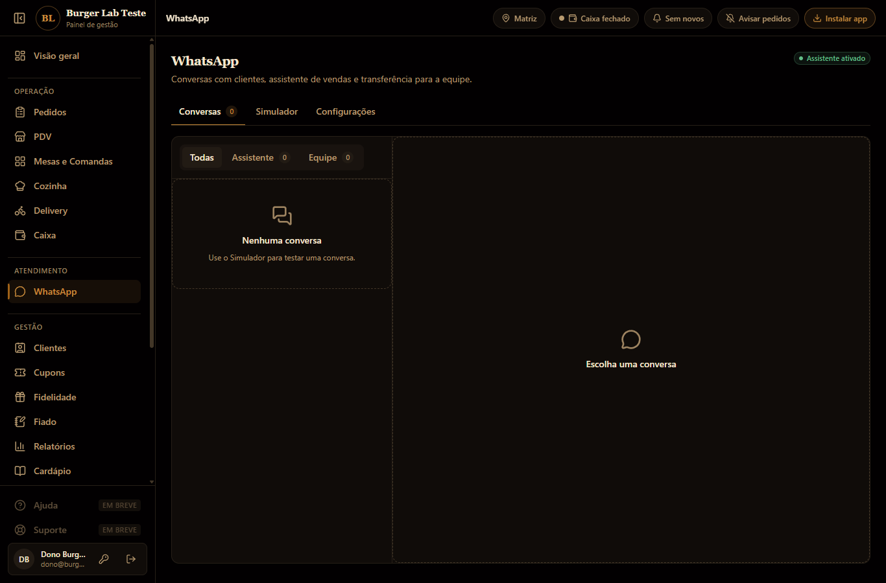
wa-01-painel.png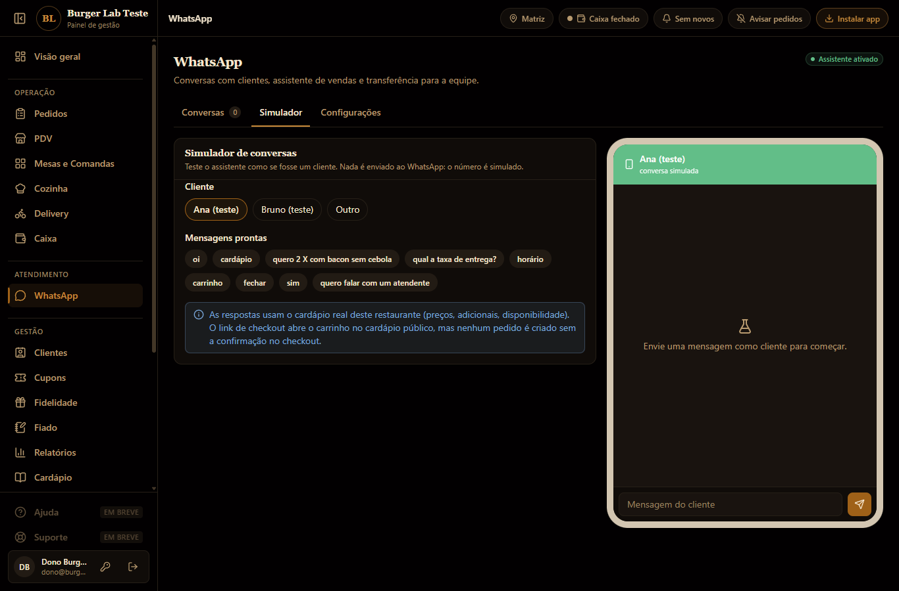
wa-02-simulador.pngConversas
Lista com última mensagem, horário, selo IA/Equipe e não lidas; conversa com autor, horário e status de entrega (✓ enviada, ✓✓ entregue/lida).
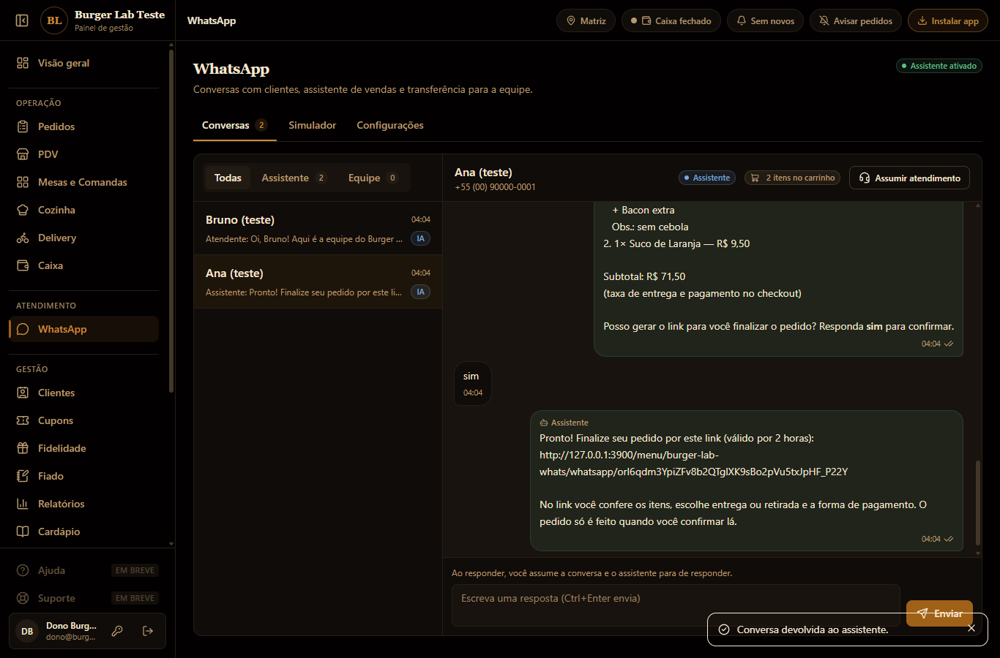
wa-07-conversa-pedido.pngRespostas automáticas
Saudação configurada na primeira resposta; quando falta uma escolha obrigatória, o assistente pergunta com as opções numeradas e aceita o nome ou o número.
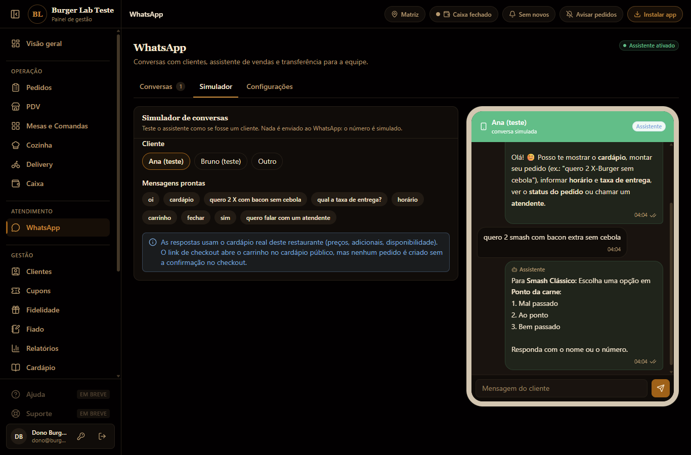
wa-03-escolha-obrigatoria.pngConsulta ao cardápio
Cada restaurante responde só com o próprio cardápio público. Na pizzaria, um pedido de produto da hamburgueria não é reconhecido, e a pizza pede a borda com o preço do servidor.
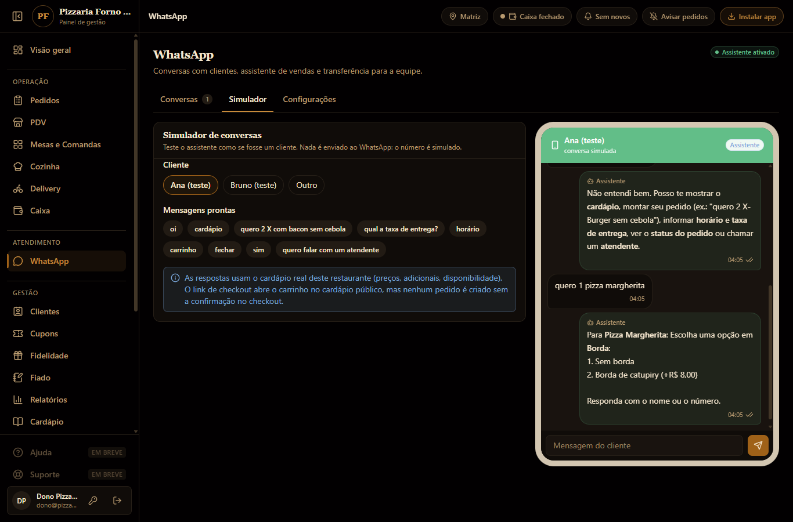
wa-13-pizzaria.pngCarrinho
Os valores vêm da mesma regra de preço do checkout: 2 × (26,00 + 5,00 de bacon) + 9,50 = R$ 71,50.
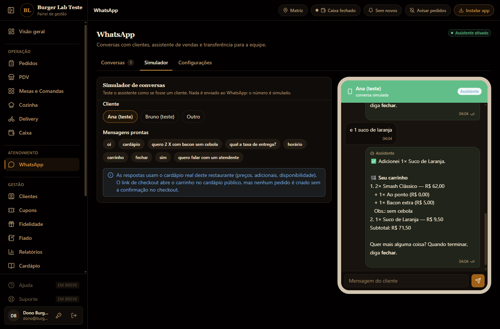
wa-04-carrinho.pngConfirmação do checkout
Resumo → o cliente responde "sim" → link seguro (2 h). O link abre o checkout existente com o carrinho recalculado; o pedido só nasce quando o cliente confirma lá.
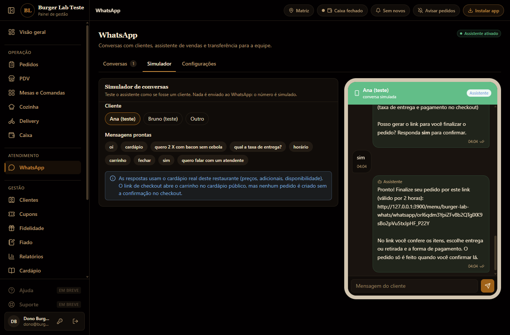
wa-05-link-checkout.png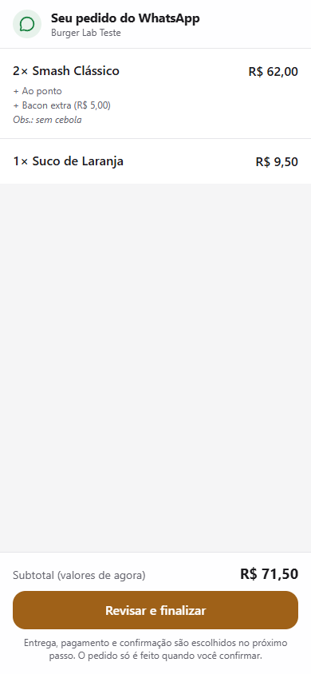
wa-09-link-celular.png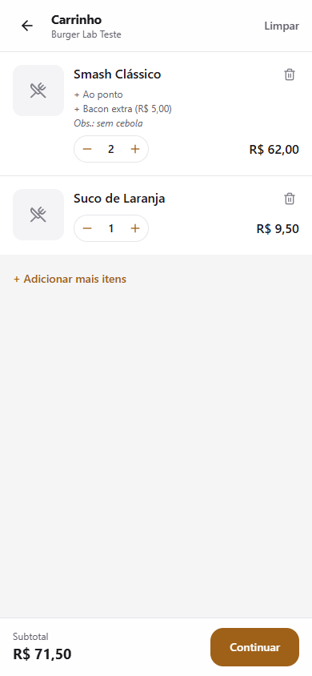
wa-10-carrinho-publico.pngAtendimento humano
"atendente" passa a conversa para a equipe; o assistente fica quieto até alguém devolver.
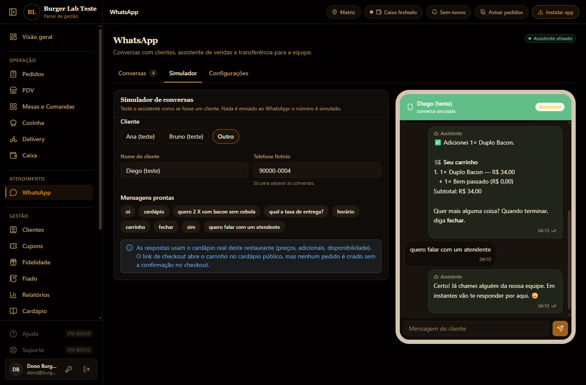
wa-14-simulador-transferencia.png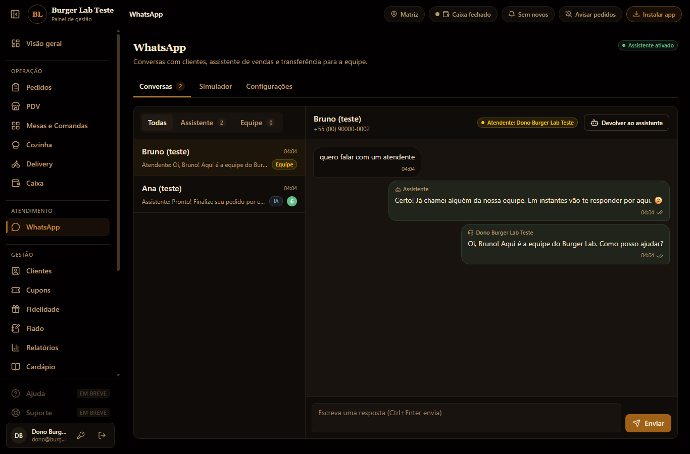
wa-06-atendente-responde.pngConfigurações
Ligar/desligar, saudação, comportamento (tom, sem mexer em preço), limite diário, conexão simulada e uso do dia.
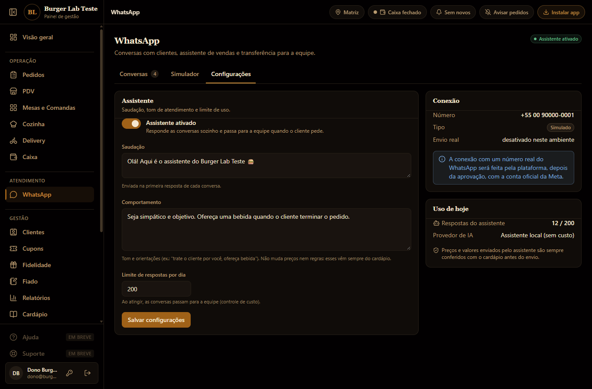
wa-08-configuracoes.pngInterface mobile
No celular, a lista e a conversa ficam em telas separadas, com "← Conversas" para voltar.
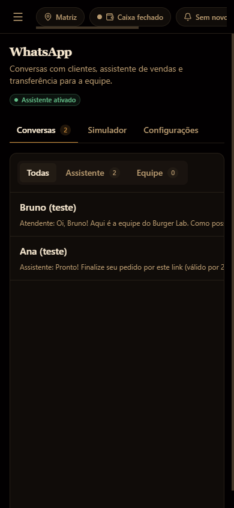
wa-11-painel-celular.png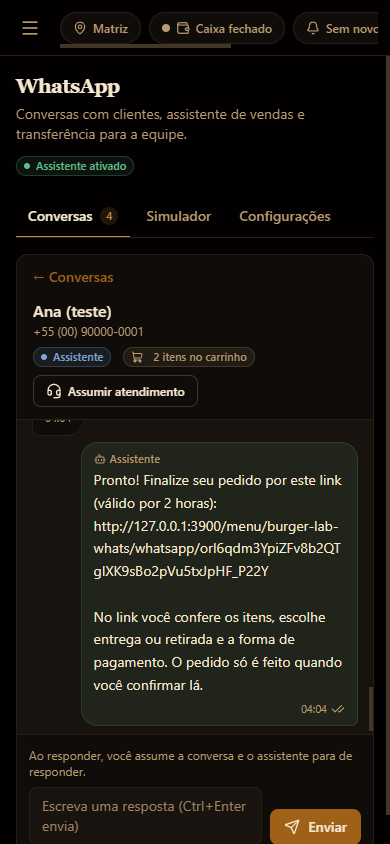
wa-12-conversa-celular.pngwa-09-link-celular.png